CODING AGENTS AS PIXEL WORLD MODELS
traex/DeepSeek-V4.1-Flash · 0136
点击播放 · 原生 RGB 像素
逐轮保存的候选
回放视频、检查图与代码变化。
每份候选均可单独播放。实际图片检查记录在下方工具轨迹中。
候选 01播放与检查图
点击播放 · 原生 RGB 像素

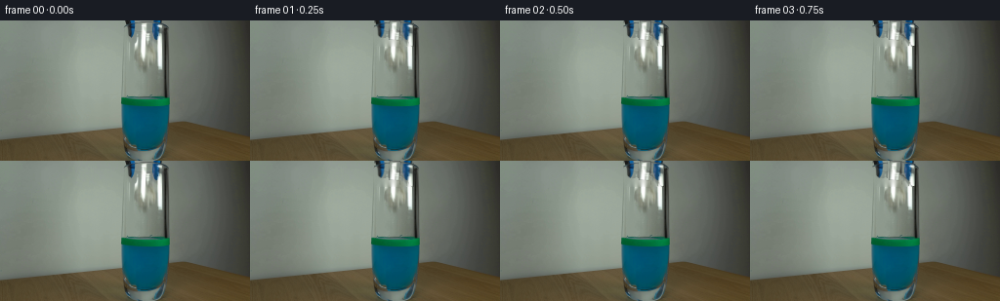
展开代码变化
--- 上一保存版本
+++ 本次保存版本
@@ -0,0 +1,183 @@
+from pathlib import Path
+
+import cv2
+import numpy as np
+from PIL import Image
+
+import artifact_io
+
+
+WIDTH = 256
+HEIGHT = 144
+FRAME_COUNT = 20
+FPS = 4.0
+
+
+def extract_sprite(image, clean, box, keep=None):
+ x0, y0, x1, y1 = box
+ source = image[y0:y1, x0:x1].astype(np.float32)
+ background = clean[y0:y1, x0:x1].astype(np.float32)
+ difference = np.max(np.abs(source - background), axis=2)
+ alpha = np.clip((difference - 7.0) / 25.0, 0.0, 1.0)
+ alpha = alpha ** 0.8
+ if keep is not None:
+ local_x = np.arange(x0, x1)[None, :]
+ alpha *= keep(local_x)
+ rgba = np.empty((y1 - y0, x1 - x0, 4), dtype=np.float32)
+ rgba[:, :, :3] = source
+ rgba[:, :, 3] = alpha
+ return rgba
+
+
+def transform_sprite(sprite, center, angle=0.0, scale=1.0):
+ height, width = sprite.shape[:2]
+ matrix = cv2.getRotationMatrix2D((width / 2.0, height / 2.0), angle, scale)
+ matrix[0, 2] += center[0] - width / 2.0
+ matrix[1, 2] += center[1] - height / 2.0
+ return cv2.warpAffine(
+ sprite,
+ matrix,
+ (WIDTH, HEIGHT),
+ flags=cv2.INTER_LINEAR,
+ borderMode=cv2.BORDER_CONSTANT,
+ borderValue=(0, 0, 0, 0),
+ )
+
+
+def composite(frame, sprite):
+ alpha = np.clip(sprite[:, :, 3:4], 0.0, 1.0)
+ frame[:] = frame * (1.0 - alpha) + sprite[:, :, :3] * alpha
+
+
+def paper_state(frame_index):
+ if frame_index <= 4:
+ return 148.25, 10.0, -3.0, 1.0, False
+
+ time = (frame_index - 4) / FPS
+ air_gravity = 80.0
+ surface_y = 84.0
+ entry_time = np.sqrt(2.0 * (surface_y - 10.0) / air_gravity)
+
+ if time < entry_time:
+ y = 10.0 + 0.5 * air_gravity * time * time
+ velocity = air_gravity * time
+ submerged = False
+ else:
+ underwater_time = time - entry_time
+ entry_velocity = air_gravity * entry_time
+ deceleration = 200.0
+ stop_time = entry_velocity / deceleration
+ travel_time = min(underwater_time, stop_time)
+ y = (
+ surface_y
+ + entry_velocity * travel_time
+ - 0.5 * deceleration * travel_time * travel_time
+ )
+ velocity = max(0.0, entry_velocity - deceleration * travel_time)
+ submerged = True
+
+ progress = min(1.0, time / 1.35)
+ x = 148.25 - 1.1 * progress + 0.45 * np.sin(5.0 * time)
+ angle = -3.0 + 22.0 * min(1.0, time / 1.15)
+ if submerged:
+ angle += 2.5 * np.sin(7.0 * underwater_time)
+ return x, y, angle, velocity, submerged
+
+
+def add_surface_disturbance(frame, frame_index):
+ if frame_index < 10:
+ return
+
+ age = (frame_index - 10) / FPS
+ if age > 1.4:
+ return
+
+ overlay = frame.copy()
+ strength = max(0.0, 1.0 - age / 1.4)
+ for delay, radius_x, radius_y in ((0.00, 6.0, 1.1), (0.12, 10.0, 1.5), (0.25, 14.0, 1.8)):
+ local_age = age - delay
+ if local_age < 0:
+ continue
+ expansion = 1.0 + 2.4 * local_age
+ rx = int(round(radius_x * expansion))
+ ry = max(1, int(round(radius_y * expansion)))
+ alpha = int(round(115 * strength * max(0.0, 1.0 - local_age / 1.0)))
+ color = (121, 206, 204)
+ cv2.ellipse(
+ overlay,
+ (148, 86),
+ (rx, ry),
+ -4.0,
+ 6.0,
+ 174.0,
+ color,
+ 1,
+ cv2.LINE_AA,
+ )
+ frame[:] = frame * (1.0 - alpha / 255.0) + overlay * (alpha / 255.0)
+
+
+def make_frames():
+ case_dir = Path(__file__).resolve().parent
+ first = np.asarray(Image.open(case_dir / "first_frame.png").convert("RGB"))
+
+ removal_mask = np.zeros((HEIGHT, WIDTH), dtype=np.uint8)
+ removal_mask[0:27, 127:168] = 255
+ clean = cv2.inpaint(first, removal_mask, 3, cv2.INPAINT_TELEA)
+
+ left_jaw = extract_sprite(first, clean, (128, 0, 143, 18))
+ right_jaw = extract_sprite(first, clean, (153, 0, 167, 26))
+ paper = extract_sprite(first, clean, (143, 1, 154, 21))
+
+ frames = np.empty((FRAME_COUNT, HEIGHT, WIDTH, 3), dtype=np.uint8)
+ frames[0] = first
+
+ jaw_opens = np.array(
+ [0.0, 0.45, 1.2, 2.2, 3.4, 4.0, 4.0, 4.0, 4.0, 4.0,
+ 4.0, 4.0, 4.0, 4.0, 4.0, 4.0, 4.0, 4.0, 4.0, 4.0]
+ )
+
+ for frame_index in range(1, FRAME_COUNT):
+ frame = clean.astype(np.float32)
+ opening = jaw_opens[frame_index]
+
+ composite(frame, transform_sprite(left_jaw, (135.5 - opening, 9.0)))
+ composite(frame, transform_sprite(right_jaw, (160.0 + opening, 13.0)))
+
+ paper_x, paper_y, paper_angle, velocity, submerged = paper_state(frame_index)
+ paper_sprite = paper.copy()
+ if submerged:
+ paper_sprite[:, :, :3] = (
+ paper_sprite[:, :, :3] * np.array([0.64, 0.86, 0.95], dtype=np.float32)
+ )
+ paper_sprite[:, :, 3] *= 0.88
+ else:
+ blur_amount = np.clip((velocity - 35.0) / 80.0, 0.0, 0.35)
+ if blur_amount > 0.02:
+ kernel = max(1, int(round(1.0 + 4.0 * blur_amount)))
+ if kernel % 2 == 0:
+ kernel += 1
+ paper_sprite[:, :, :3] = cv2.GaussianBlur(
+ paper_sprite[:, :, :3], (kernel, kernel), 0
+ )
+
+ scale = 1.10 if submerged else 1.0
+ composite(
+ frame,
+ transform_sprite(
+ paper_sprite,
+ (paper_x, paper_y),
+ angle=paper_angle,
+ scale=scale,
+ ),
+ )
+
+ add_surface_disturbance(frame, frame_index)
+ frames[frame_index] = np.clip(np.rint(frame), 0, 255).astype(np.uint8)
+
+ return frames
+
+
+if __name__ == "__main__":
+ case_dir = Path(__file__).resolve().parent
+ artifact_io.save(make_frames(), case_dir)
候选 02播放与检查图
点击播放 · 原生 RGB 像素

展开代码变化
--- 上一保存版本
+++ 本次保存版本
@@ -50,11 +50,11 @@
def paper_state(frame_index):
- if frame_index <= 4:
+ if frame_index <= 3:
return 148.25, 10.0, -3.0, 1.0, False
- time = (frame_index - 4) / FPS
- air_gravity = 80.0
+ time = (frame_index - 3) / FPS
+ air_gravity = 60.0
surface_y = 84.0
entry_time = np.sqrt(2.0 * (surface_y - 10.0) / air_gravity)
@@ -85,10 +85,10 @@
def add_surface_disturbance(frame, frame_index):
- if frame_index < 10:
+ if frame_index < 11:
return
- age = (frame_index - 10) / FPS
+ age = (frame_index - 11) / FPS
if age > 1.4:
return
候选 03播放与检查图
点击播放 · 原生 RGB 像素

展开代码变化
--- 上一保存版本
+++ 本次保存版本
@@ -65,15 +65,24 @@
else:
underwater_time = time - entry_time
entry_velocity = air_gravity * entry_time
- deceleration = 200.0
- stop_time = entry_velocity / deceleration
- travel_time = min(underwater_time, stop_time)
- y = (
- surface_y
- + entry_velocity * travel_time
- - 0.5 * deceleration * travel_time * travel_time
+ deceleration = 160.0
+ terminal_velocity = 3.5
+ slow_time = (entry_velocity - terminal_velocity) / deceleration
+ travel_time = min(underwater_time, slow_time)
+ slow_distance = (
+ entry_velocity * slow_time - 0.5 * deceleration * slow_time * slow_time
)
- velocity = max(0.0, entry_velocity - deceleration * travel_time)
+ if underwater_time <= slow_time:
+ y = (
+ surface_y
+ + entry_velocity * travel_time
+ - 0.5 * deceleration * travel_time * travel_time
+ )
+ else:
+ y = surface_y + slow_distance + terminal_velocity * (
+ underwater_time - slow_time
+ )
+ velocity = max(terminal_velocity, entry_velocity - deceleration * travel_time)
submerged = True
progress = min(1.0, time / 1.35)
@@ -85,10 +94,10 @@
def add_surface_disturbance(frame, frame_index):
- if frame_index < 11:
+ if frame_index < 9:
return
- age = (frame_index - 11) / FPS
+ age = (frame_index - 9) / FPS
if age > 1.4:
return
可观测工具轨迹
实际执行的命令与返回图片。
命令 1exit 0
/bin/bash -c "pwd && rg --files -g '"'!*.git*'"'"
命令 2exit 0
/bin/bash -c "sed -n '1,240p' prompt.txt"
命令 3exit 0
/bin/bash -c "sed -n '1,280p' GENERATION_RULES.md"
命令 4exit 0
/bin/bash -c "git status --short && find . -maxdepth 2 -type f -printf '%p %s bytes\\n' | sort"
命令 5exit 0
/bin/bash -c "sed -n '1,260p' artifact_io.py"
命令 6exit 0
/bin/bash -c "python3 - <<'PY'
from PIL import Image
im=Image.open('first_frame.png')
print(im.size, im.mode)
for box,name in [((105,0,180,100),'top_crop.png'),((110,0,180,144),'glass_crop.png'),((120,0,175,75),'tool_crop.png')]:
im.crop(box).resize(((box[2]-box[0])*6,(box[3]-box[1])*6),Image.Resampling.NEAREST).save('.tmp/'+name)
PY"命令 7exit 0
/bin/bash -c "python3 - <<'PY'
from PIL import Image
import numpy as np
im=np.array(Image.open('first_frame.png'))
# summarize exact colors and high saturation locations
u,c=np.unique(im.reshape(-1,3),axis=0,return_counts=True)
for i in np.argsort(c)[-20:][::-1]: print(tuple(u[i]),c[i])
mx=im.max(2); mn=im.min(2)
mask=(mx-mn>50)&(mx>70)
y,x=np.where(mask)
print('sat bounds',x.min(),x.max(),y.min(),y.max(),'n',len(x))
PY"命令 8exit 0
/bin/bash -c "python3 - <<'PY'
import numpy as np
from PIL import Image
im=np.array(Image.open('first_frame.png'))
# saturation masks by hue-ish
R,G,B=im[:,:,0].astype(int),im[:,:,1].astype(int),im[:,:,2].astype(int)
for name,m in [
('blue',(B>R+35)&(B>G+15)&(B>70)),
('green',(G>R+35)&(G>B+5)&(G>60)),
('darkblue',(B>R+15)&(B>G+5)&(B<100)),
('cyan',(B>R+35)&(G>R+10)&(B>60))]:
y,x=np.where(m)
print(name,'n',len(x), 'bounds', (x.min(),x.max(),y.min(),y.max()) if len(x) else None)
for yy in range(0,144,8):
xs=x[(y>=yy)&(y<yy+8)]
if len(xs): print(' ',yy,len(xs),int(xs.min()),int(xs.max()))
PY"命令 9exit 0
/bin/bash -c "python3 - <<'PY'
import numpy as np
from PIL import Image
im=np.array(Image.open('first_frame.png'))
# inspect rows: median and min/max in glass zone; also save annotated crops and row stripe
for y in [0,4,8,12,16,20,24,28,32,36,40,44,48,52,56,60,64,68,72,76,80,84,88,96,104,112,120,128,136,143]:
row=im[y,110:185]
print(y, 'med',np.median(row,axis=0).astype(int), 'blue count',((row[:,2]>row[:,0]+35)&(row[:,2]>row[:,1]+10)).sum())
# enlarged tool top with nearest + grid labels perhaps
Image.fromarray(im[0:40,120:180]).resize((600,400),Image.Resampling.NEAREST).save('.tmp/tool_zoom.png')
PY"命令 10exit 0
/bin/bash -c "python3 - <<'PY'
from PIL import Image
im=Image.open('first_frame.png')
for box,name in [((145,0,166,26),'paper_zoom.png'),((125,0,172,35),'jaws_zoom.png'),((120,74,176,125),'liquid_zoom.png')]:
im.crop(box).resize(((box[2]-box[0])*14,(box[3]-box[1])*14),Image.Resampling.LANCZOS).save('.tmp/'+name)
PY"命令 11exit 0
/bin/bash -c "python3 - <<'PY'
from PIL import Image, ImageDraw
import numpy as np
im=Image.open('first_frame.png')
scale=8
crop=im.crop((120,0,180,36)).resize((60*scale,36*scale),Image.Resampling.NEAREST)
out=Image.new('RGB',(crop.width,crop.height),(0,0,0)); out.paste(crop)
d=ImageDraw.Draw(out)
for x in range(0,61,5):
d.line((x*scale,0,x*scale,out.height),fill=(255,0,0),width=1); d.text((x*scale+1,1),str(120+x),fill=(255,255,0))
for y in range(0,37,5):
d.line((0,y*scale,out.width,y*scale),fill=(255,0,0),width=1); d.text((1,y*scale+1),str(y),fill=(255,255,0))
out.save('.tmp/tool_grid.png')
PY"命令 12exit 0
/bin/bash -c "python3 - <<'PY'
from PIL import Image
import numpy as np
im=np.array(Image.open('first_frame.png'))
# Print color code/mask ascii in x 125:170 y0:30, categories B blue, w white-ish, g green, b black/dark, . bg
for y in range(0,31):
s=''
for x in range(125,171):
r,g,b=map(int,im[y,x]);
if b>r+30 and b>g+5: c='B'
elif g>r+30 and g>b: c='G'
elif max(r,g,b)<60: c='k'
elif min(r,g,b)>165: c='W'
elif max(r,g,b)-min(r,g,b)>18 and b>r: c='b'
elif max(r,g,b)-min(r,g,b)>12: c='g'
else: c='.'
s+=c
print(f'{y:02d}',s)
PY"命令 13exit 0
/bin/bash -c "python3 - <<'PY'
from PIL import Image
im=Image.open('first_frame.png')
# upscale broad tool plus liquid for palette and geometry
im.crop((115,0,185,144)).resize((560,1152),Image.Resampling.NEAREST).save('.tmp/glass_full8.png')
PY"命令 14exit 0
/bin/bash -c "python3 - <<'PY'
from PIL import Image,ImageDraw
im=Image.open('first_frame.png')
out=Image.new('RGB',(256*4,144*4))
for i in range(4):out.paste(im.resize((1024,576),Image.Resampling.NEAREST),(0,0))
d=ImageDraw.Draw(out)
for x in range(100,181,5):
d.line((x*4,0,x*4,out.height),fill=(255,0,0),width=1)
if x%10==0:d.text((x*4+1,1),str(x),fill=(255,255,0))
for y in range(0,145,5):
d.line((0,y*4,out.width,y*4),fill=(255,0,0),width=1)
if y%10==0:d.text((400,y*4+1),str(y),fill=(255,255,0))
out.crop((400,0,740,580)).save('.tmp/glass_grid.png')
PY"命令 15exit 0
/bin/bash -c "python3 - <<'PY'
try:
import cv2; print('cv2',cv2.__version__)
except Exception as e: print('no cv2',e)
try:
import scipy; print('scipy',scipy.__version__)
except Exception as e: print('no scipy',e)
PY"命令 16exit 0
/bin/bash -c "python3 - <<'PY'
import numpy as np
from PIL import Image
im=np.array(Image.open('first_frame.png')).astype(float)
# glass outer edges from brightness/dark line samples, use scans for dark local minima in x at select y
for y in [0,10,20,30,40,50,60,70,75,80,85,90,100,110,120,125,130,135,140,143]:
g=im[y].mean(1)
print('y',y, 'samples',[(x,im[y,x].astype(int).tolist()) for x in [118,120,122,124,126,128,130,135,145,155,165,170,172,174,176,178,180]])
PY"命令 17exit 0
/bin/bash -c "python3 - <<'PY'
import numpy as np
from PIL import Image
im=np.array(Image.open('first_frame.png')).astype(float)
# stats inside glass interior x132:166 excluding saturated tool/liquid
for box in [(132,18,166,75),(135,35,165,75),(132,0,166,15),(110,0,124,144),(174,0,190,144)]:
x0,y0,x1,y1=box;a=im[y0:y1,x0:x1]
print(box,'mean',a.mean((0,1)).round(1),'std',a.std((0,1)).round(1))
# average x gradients and rows in glass interior
print('col means y20:75')
for x in range(126,174,2): print(x,im[20:75,x].mean(0).round(1).tolist())
PY"命令 18exit 0
/bin/bash -c 'python3 generate.py'
命令 19exit 0
/bin/bash -c "python3 - <<'PY'
from PIL import Image
import numpy as np
im=np.array(Image.open('frames/01.png'))
for box,name in [((120,0,175,40),'f01top.png'),((138,20,160,85),'f01fall.png'),((138,75,162,120),'f01water.png')]:
Image.fromarray(im).crop(box).resize(((box[2]-box[0])*10,(box[3]-box[1])*10),Image.Resampling.NEAREST).save('.tmp/'+name)
# clean render compare
import generate
from pathlib import Path
first=np.asarray(Image.open('first_frame.png'))
mask=np.zeros((144,256),np.uint8);mask[0:27,127:168]=255
clean=__import__('cv2').inpaint(first,mask,3,__import__('cv2').INPAINT_TELEA)
Image.fromarray(clean).crop((120,0,175,40)).resize((550,400),Image.Resampling.NEAREST).save('.tmp/clean_top.png')
PY"命令 20exit 0
/bin/bash -c "python3 - <<'PY'
import numpy as np
from PIL import Image
import generate
# print paper states per frame
for i in range(20):
x,y,a,v,s=generate.paper_state(i); print(i,round(x,2),round(y,2),round(a,1),round(v,1),s)
# validate frame0 exact and report diffs
first=np.array(Image.open('first_frame.png'))
frames=np.array([np.array(Image.open(f'frames/{i:02}.png')) for i in range(20)])
print('shape',frames.shape,'exact0',np.array_equal(first,frames[0]))
for i in range(1,20):
d=np.abs(frames[i].astype(int)-first.astype(int))
print(i,'changed',(d.max(2)>3).sum(),'bbox',end=' ')
ys,xs=np.where(d.max(2)>3); print((xs.min(),xs.max(),ys.min(),ys.max()) if len(xs) else None)
PY"命令 21exit 0
/bin/bash -c "python3 - <<'PY'
from PIL import Image,ImageDraw
import numpy as np
first=np.array(Image.open('first_frame.png'))
mask=np.zeros((144,256),np.uint8);mask[0:27,127:168]=255
import cv2
clean=cv2.inpaint(first,mask,3,cv2.INPAINT_TELEA)
# extract candidate sprites and contact sheet raw channels enlarged
import generate
ls=generate.extract_sprite(first,clean,(128,0,143,18));rs=generate.extract_sprite(first,clean,(153,0,167,26));pp=generate.extract_sprite(first,clean,(143,1,154,21))
for spr,name in [(ls,'left'),(rs,'right'),(pp,'paper')]:
h,w=spr.shape[:2]; rgba=spr.copy(); rgba[:,:,:3]*=rgba[:,:,3:4]
rgba=(np.clip(rgba,0,255)).astype(np.uint8)
Image.fromarray(rgba).resize((w*20,h*20),Image.Resampling.NEAREST).save(f'.tmp/{name}_sprite.png')
print(name,w,h,'alpha>', (spr[:,:,3]>.1).sum(),spr[:,:,3].max())
PY"命令 22exit 0
/bin/bash -c "python3 - <<'PY'
from PIL import Image
import numpy as np
for n in [4,5,6,7,8,9,10,11,12,13,14,15,16,17,18,19]:
im=np.array(Image.open(f'frames/{n:02}.png'))
print(n)
# print category chars inside inner glass x136:160 y80:122 with every pixel represented by dominant dev from first
base=np.array(Image.open('first_frame.png'))
for y in range(78,126,2):
s=''
for x in range(132,166,1):
r,g,b=map(int,im[y,x]); br,bg,bb=map(int,base[y,x])
d=max(abs(r-br),abs(g-bg),abs(b-bb))
if d<12:c='.'
elif min(r,g,b)>145:c='W'
elif r>g*1.1:c='y'
elif g>b*1.15 and g>70:c='g'
elif b>g*1.15:c='B'
elif max(r,g,b)<45:c='k'
else:c='o'
s+=c
print(s)
PY"命令 23exit 0
/bin/bash -c "python3 - <<'PY'
from PIL import Image
import numpy as np
for i in [0,1,2,3,4,5,6,7,8,9,10,11,12,19]:
im=np.array(Image.open(f'frames/{i:02}.png'))
# top region x120:180 y0:32 enlarged 8x, also combine horizontally maybe
crop=Image.fromarray(im[0:32,120:180]).resize((480,256),Image.Resampling.NEAREST)
crop.save(f'.tmp/top_{i:02}.png')
PY"命令 24exit 0
/bin/bash -c "python3 - <<'PY'
from PIL import Image
import numpy as np
# crop liquid in all later frames, tile with labels
ims=[]
for i in range(8,20):
im=Image.open(f'frames/{i:02}.png').crop((125,72,174,125)).resize((196,212),Image.Resampling.NEAREST)
ims.append((i,im))
out=Image.new('RGB',(196*4,233*3),(25,25,30))
from PIL import ImageDraw
d=ImageDraw.Draw(out)
for k,(i,im) in enumerate(ims):
x=(k%4)*196;y=(k//4)*233
d.text((x+3,y+3),f'{i}',fill='white');out.paste(im,(x,y+21))
out.save('.tmp/water_strip.png')
PY"命令 25exit 0
/bin/bash -c "python3 generate.py && python3 - <<'PY'
from PIL import Image
import numpy as np, generate
for i in range(20):
x,y,a,v,s=generate.paper_state(i); print(i,round(x,2),round(y,2),round(a,1),round(v,1),s)
first=np.array(Image.open('first_frame.png')); frames=np.array([np.array(Image.open(f'frames/{i:02}.png')) for i in range(20)])
print('shape',frames.shape,'dtype',frames.dtype,'frame0 exact',np.array_equal(first,frames[0]))
PY"命令 26exit 0
/bin/bash -c "python3 - <<'PY'
from PIL import Image,ImageDraw
import numpy as np
ims=[]
for i in range(20):
im=Image.open(f'frames/{i:02}.png').crop((118,0,180,126)).resize((248,504),Image.Resampling.NEAREST)
ims.append(im)
out=Image.new('RGB',(248*5,529*4),(25,25,30));d=ImageDraw.Draw(out)
for i,im in enumerate(ims):
x=(i%5)*248;y=(i//5)*529
d.text((x+3,y+3),str(i),fill='white');out.paste(im,(x,y+21))
out.save('.tmp/all_frames_strip.png')
PY"命令 27exit 0
/bin/bash -c "python3 - <<'PY'
from PIL import Image
import numpy as np
for i in [3,4,5,6,7,8,9,10,11]:
im=np.array(Image.open(f'frames/{i:02}.png'))
# crop around paper and upscale bilinear for reading
box=(140,0,158,120)
Image.fromarray(im).crop(box).resize((180,1200),Image.Resampling.NEAREST).save(f'.tmp/path_{i:02}.png')
PY"命令 28exit 0
/bin/bash -c "python3 - <<'PY'
from PIL import Image,ImageDraw
import numpy as np
# four alternate crops of liquid: use high-quality upscaled
ims=[]
for i in [8,9,10,11]:
im=Image.open(f'frames/{i:02}.png').crop((125,68,174,126)).resize((392,464),Image.Resampling.NEAREST)
ims.append((i,im))
out=Image.new('RGB',(392*4,487),(25,25,30));d=ImageDraw.Draw(out)
for k,(i,im) in enumerate(ims):
x=k*392;d.text((x+4,3),str(i),fill='white');out.paste(im,(x,23))
out.save('.tmp/impact_strip.png')
PY"命令 29exit 0
/bin/bash -c "python3 generate.py && python3 - <<'PY'
from PIL import Image
import numpy as np, generate
for i in range(20):
x,y,a,v,s=generate.paper_state(i); print(i,round(x,2),round(y,2),round(a,1),round(v,1),s)
frames=np.array([np.array(Image.open(f'frames/{i:02}.png')) for i in range(20)])
print('frames',frames.shape,'dtype',frames.dtype)
PY"命令 30exit 0
/bin/bash -c "python3 - <<'PY'
from pathlib import Path
from PIL import Image
import numpy as np, json, zipfile
p=Path('.')
frames=np.array([np.array(Image.open(p/f'frames/{i:02}.png')) for i in range(20)])
print('frames:',frames.shape, frames.dtype, 'first exact:',np.array_equal(frames[0],np.array(Image.open('first_frame.png'))))
print('range:',int(frames.min()),int(frames.max()))
print('pixels npz:',Path('pixels.npz').exists(),Path('pixels.npz').stat().st_size)
with np.load('pixels.npz') as z:
print('npz keys',z.files,'shape',z['pixels'].shape)
print('index html:',Path('index.html').exists(),Path('index.html').stat().st_size)
print('files',sorted(x.name for x in p.glob('*') if x.is_file()))
PY"命令 31exit 1
/bin/bash -c "python3 - <<'PY'
import json
from pathlib import Path
html=Path('index.html').read_text()
start=html.index('__DATA__') if '__DATA__' in html else html.index('const data =')
print(html[:600])
print('data placeholder?', '__DATA__' in html)
PY"命令 32exit 0
/bin/bash -c "sed -n '1,240p' player_template.html"
命令 33exit 0
/bin/bash -c "python3 - <<'PY'
import json,re
from pathlib import Path
s=Path('index.html').read_text()
m=re.search(r'const DATA=(\\{.*?\\}),W=DATA',s,re.S)
assert m
D=json.loads(m.group(1))
print({k:(len(v) if isinstance(v,list) else v) for k,v in D.items() if k not in ('caption',)})
print('caption',D['caption'])
print('deltas',len(D['deltas']),'first b64 chars',len(D['first']))
PY"命令 34exit 0
/bin/bash -c "find . -maxdepth 2 -type f -printf '%p %s\\n' | sort | sed -n '1,120p'"
命令 35exit 0
/bin/bash -c "python3 -m py_compile generate.py artifact_io.py && python3 - <<'PY'
from pathlib import Path
from PIL import Image
import numpy as np
frames=np.array([np.asarray(Image.open(Path('frames')/f'{i:02d}.png')) for i in range(20)])
first=np.asarray(Image.open('first_frame.png'))
assert frames.shape==(20,144,256,3) and frames.dtype==np.uint8
assert np.array_equal(frames[0],first)
assert all(np.any(frames[i]"'!=frames[i-1]) for i in range(1,20))
print('"'PASS: 20 RGB frames, 256x144, frame 00 exact, every later frame changes')
PY"视觉工具实际返回图片 1

视觉工具实际返回图片 2
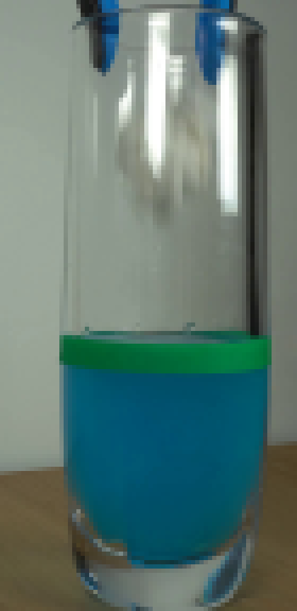
视觉工具实际返回图片 3
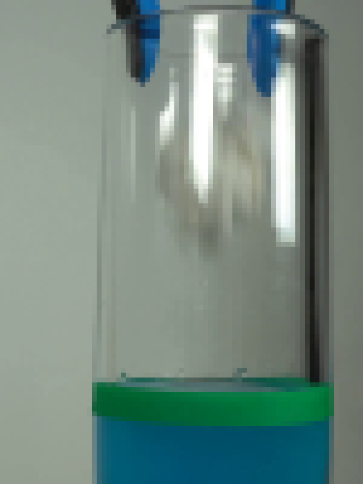
视觉工具实际返回图片 4
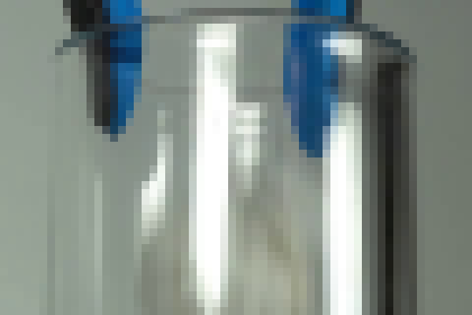
视觉工具实际返回图片 5
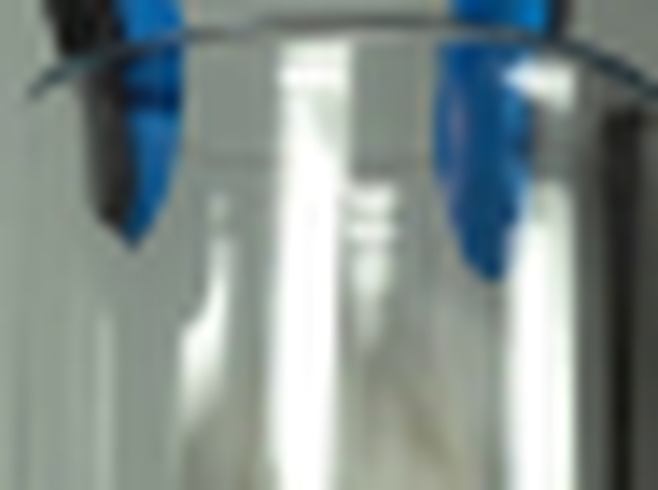
视觉工具实际返回图片 6
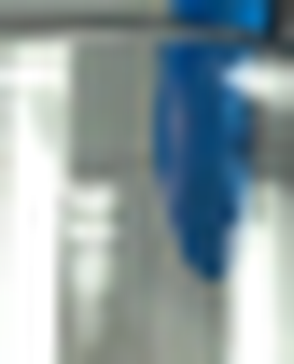
视觉工具实际返回图片 7
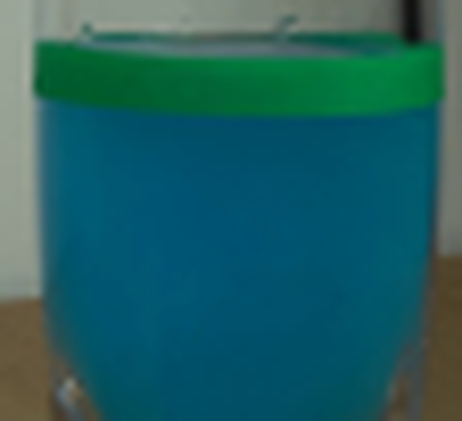
视觉工具实际返回图片 8
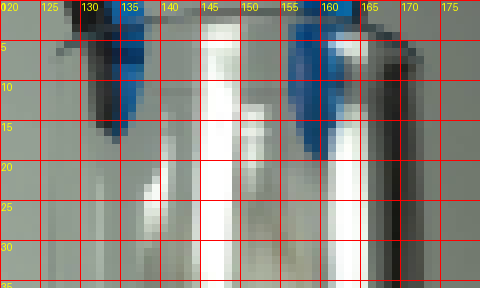
视觉工具实际返回图片 9
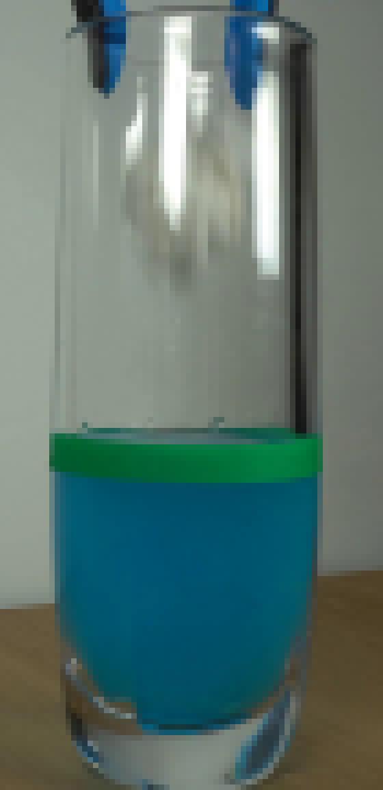
视觉工具实际返回图片 10
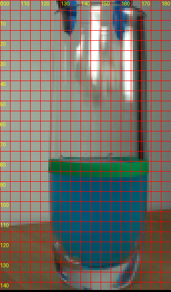
视觉工具实际返回图片 11
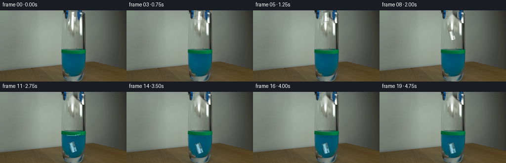
视觉工具实际返回图片 12
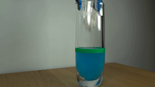
视觉工具实际返回图片 13
视觉工具实际返回图片 14
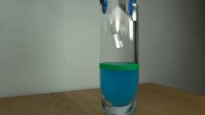
视觉工具实际返回图片 15
视觉工具实际返回图片 16
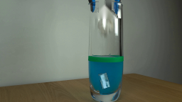
视觉工具实际返回图片 17
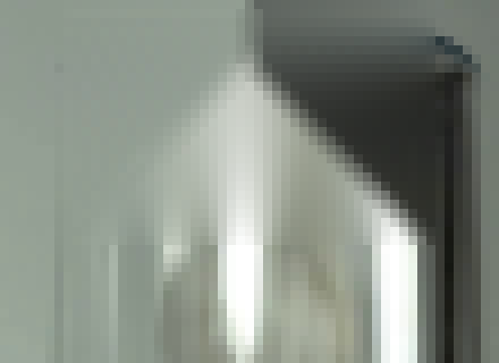
视觉工具实际返回图片 18
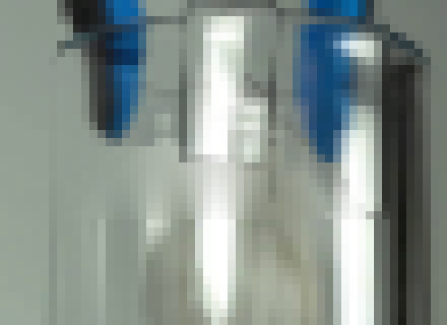
视觉工具实际返回图片 19
视觉工具实际返回图片 20
视觉工具实际返回图片 21
视觉工具实际返回图片 22
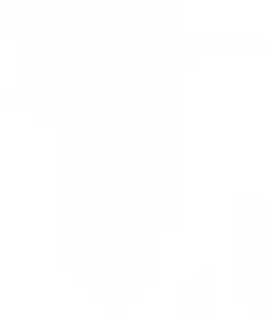
视觉工具实际返回图片 23
视觉工具实际返回图片 24
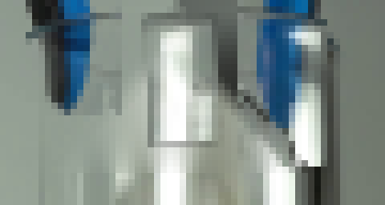
视觉工具实际返回图片 25
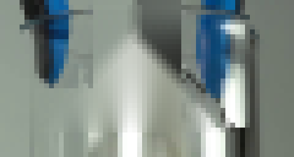
视觉工具实际返回图片 26
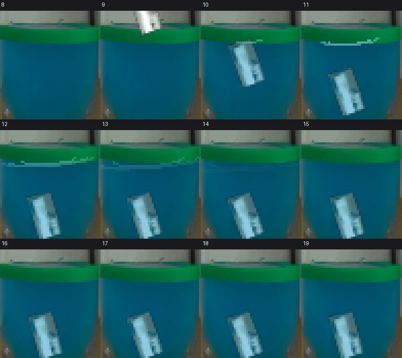
视觉工具实际返回图片 27
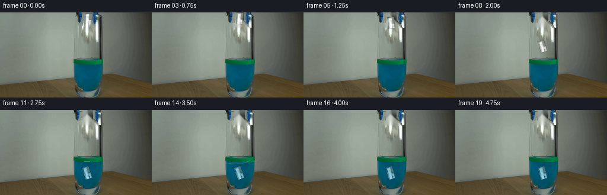
视觉工具实际返回图片 28
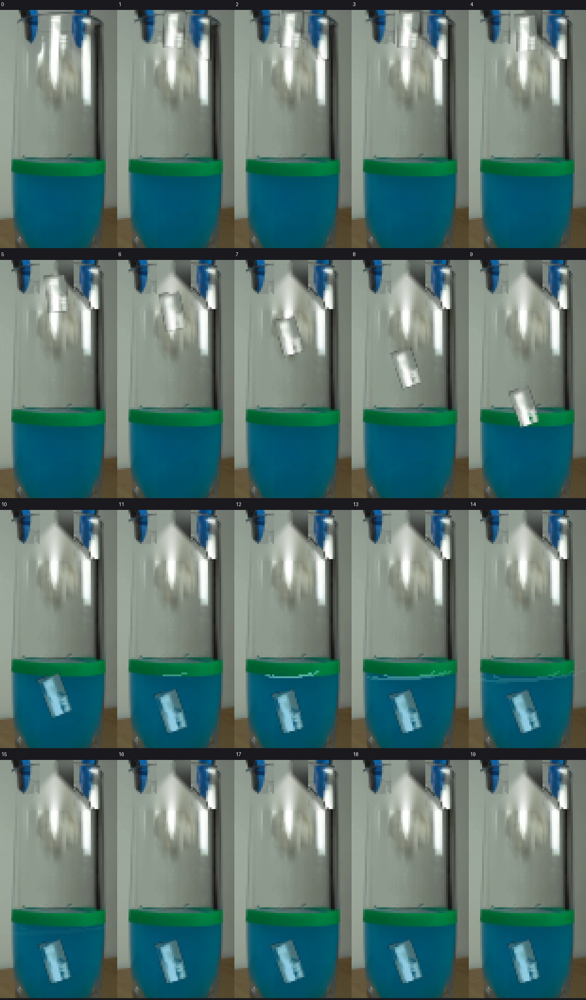
视觉工具实际返回图片 29
视觉工具实际返回图片 30
视觉工具实际返回图片 31
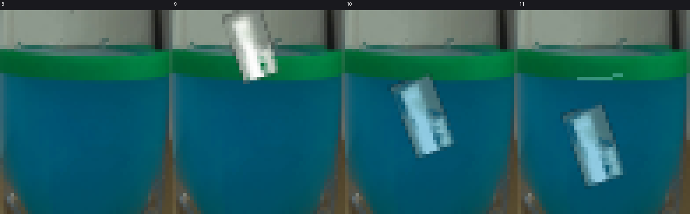
视觉工具实际返回图片 32
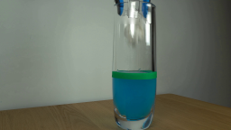
视觉工具实际返回图片 33
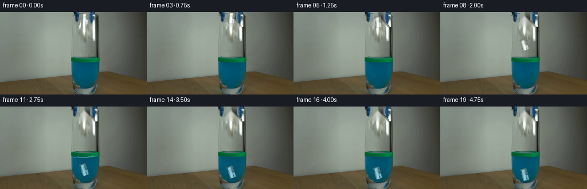
视觉工具实际返回图片 34

保存候选 3 份；完成命令 35 次；可验证图片返回 34 张。原始 API 响应与完整日志保留在本地。